Sources. Google, new is the November 2026 model under review. Google, current is the model Google published in 2024. GloFAS v4 and GloFAS v5 are two versions of the European model. Each has a reanalysis: the model run over past years, 1999 to 2023 here. Three have an archive of the forecasts they would have issued: Google, new 2016 to 2025, Google, current 2016 to June 2023, GloFAS v4 2003 to 2023. Forecasts are compared on 2016 to 2023.
Benchmark. The SWALIM river gauges at the same seven stations. A gauge measures water level and a model gives flow, so each is read against its own levels. The 1-in-3 level of a gauge or a model is the value its season peak reaches in about one season in three; the 1-in-5 level, one in five. A flood season at a station is a season whose peak reaches the 1-in-3 level (or the 1-in-5 where stated). Gauge levels are set from 2000 to 2023, model levels from 1999 to 2023. The seasons are Deyr, October to December, and Gu, March to May.
1What the records show
- The trigger rule on the new model's reanalysis, 1-in-3 level, 1999 to 2023. Juba Deyr: reached in 6 of 7 river floods (not 2015), 2 false alarms (2013, 2020). Shabelle Deyr: reached in 5 of 7 river floods (not 2006, 2008), 3 false alarms (2010, 2013, 2021). Juba Gu: reached in 6 of 6 river floods, 1 false alarm (2013). Shabelle Gu: reached in 6 of 7 river floods (not 2003), 2 false alarms (2013, 2021).
- The same at the 1-in-5 level. Juba Deyr: reached in 1 of 3 river floods (not 2006, 2014), 3 false alarms (2008, 2019, 2020). Shabelle Deyr: reached in 4 of 5 river floods (not 2006), 1 false alarm (2010). Juba Gu: reached in 2 of 3 river floods (not 2023), 1 false alarm (2016). Shabelle Gu: reached in 3 of 3 river floods, 2 false alarms (2010, 2018).
- Forecasts. On 2016 to 2023 the new model's forecasts and its reanalysis give the same result in 31 of the 32 river seasons, so the forecast rows are not separate evidence: they are the reanalysis again on fewer seasons. Seven days ahead, on the days of the largest rises, the forecast already showed 79 to 105% of the rise (GloFAS v4: -38 to 70%).
- Days between the threshold and the second gauge crossing its 1-in-3 (middle value over the floods reached, 2016 to 2023; forecasts, then the reanalysis on the same seasons). Juba Deyr: 5 before, 1 after; Shabelle Deyr: 4 before, same day; Juba Gu: 3 after, 10 after; Shabelle Gu: 13 before, 7 before.
- After 2023, new model only. Deyr 2024: threshold reached on the Juba and Shabelle on both records (gauges: Juba gauge flood, Shabelle gauge flood). Gu 2024: threshold reached on the Juba and Shabelle on both records (gauges: Juba gauge flood, Shabelle gauge flood). Deyr 2025: reanalysis: threshold reached on the Juba and Shabelle; forecasts: threshold reached on the Juba (gauges: Juba no gauge flood, Shabelle no gauge flood). Gu 2025: threshold not reached on either record (gauges: Juba no gauge record, Shabelle no gauge flood).
- Single stations, 1-in-3, new model, the seven stations added up. Deyr: threshold reached in 33 of 51 flood seasons, 18 false alarms (with each level fitted without the season scored: 30 of 45, 22). Gu: threshold reached in 37 of 44 flood seasons, 14 false alarms (with each level fitted without the season scored: 41 of 47, 13). At Jowhar every source reaches its threshold in fewer than half of the flood seasons (POD 0.27 to 0.45; other stations 0.40 to 1.00); the Jowhar gauge sat at its top reading for five days or more in 9 of 24 Deyr seasons.
- Day-to-day agreement with the gauges (rank correlation: 0 is no relation, 1 is the same order of days). The new model has the highest value of the four sources at 13 of the 14 combinations of station and season (0.79 to 0.90), and at 13 with the seasonal cycle removed (0.57 to 0.83). Its margin is larger than the range from redrawing the seasons at 10 of 14 against Google, current, 12 against GloFAS v4 and 10 against GloFAS v5.
- Which seasons are the large ones. The new model has the highest, or equal highest, AUC at 8 of 14 combinations and the highest rank correlation of season peaks at 9. Dollow in Deyr, with 8 seasons on record, is where it is lowest (AUC 0.69).
- Size of the flows against SWALIM's discharge series. At Luuq, Belet Weyne and Bulo Burti, on a typical day of the year the new model runs at 1.5 to 2.0 times SWALIM's flow (GloFAS v5 0.8 to 1.0, GloFAS v4 3.9 to 5.5, Google, current 0.5 to 1.3); at the season peaks it runs at 0.7 to 1.9 times. The Bardheere series is not consistent with Luuq upstream (section 9).
2The largest floods, day by day
The gauges' five largest seasons on each river, one panel per station. Every line is drawn as a share of its own 1-in-3 level, so 100% is the flood level for the gauge and for the model alike. The gauge is a water level and the model a flow, so the heights of the curves differ; what can be compared is when each rises and whether each reaches its 100% line. Where a gauge line runs flat at its top, the gauge gave the same reading on those days (section 10). A line that stops before the end of the season is the end of that record. The vertical scale changes from one season to the next.
Season
Lines
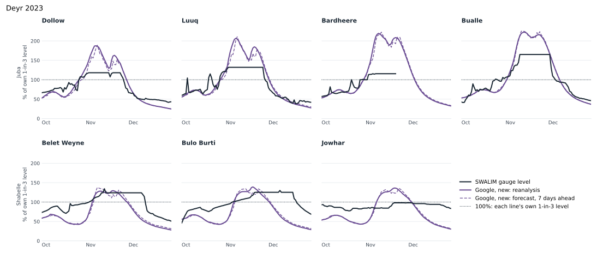

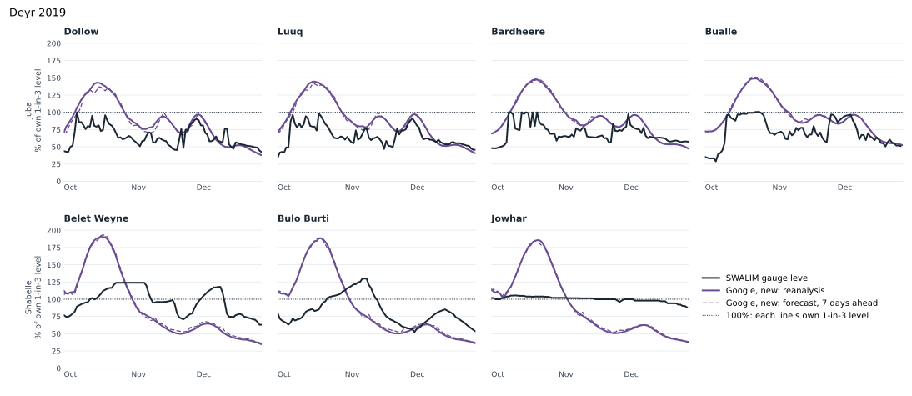
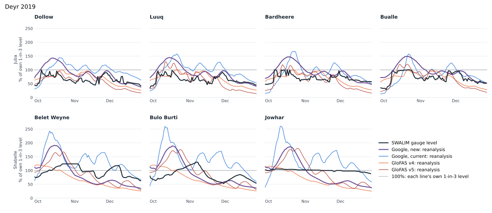

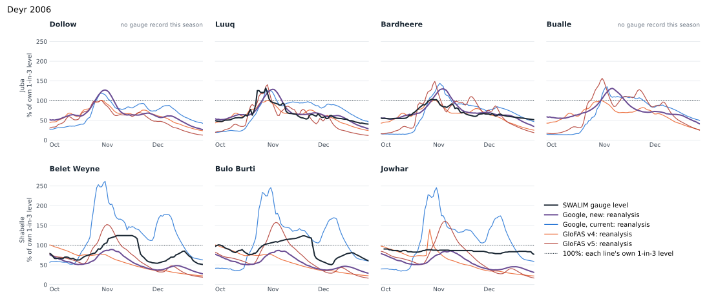
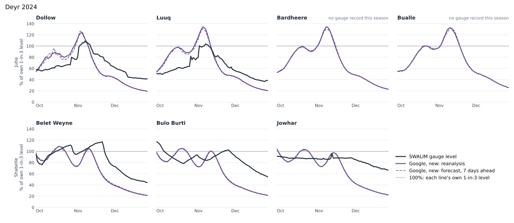
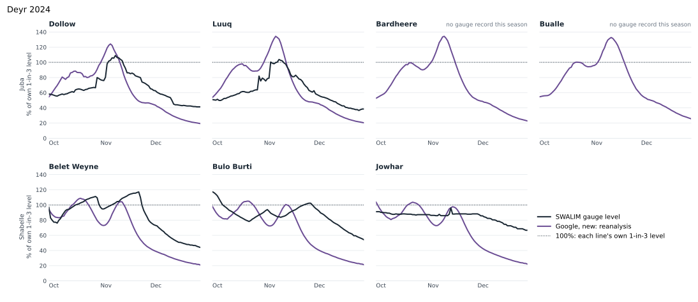
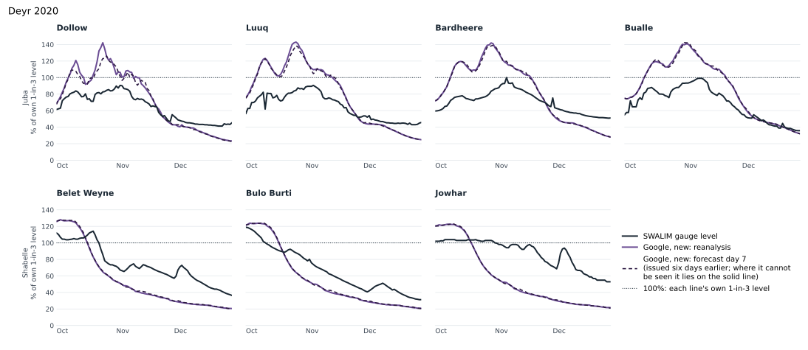
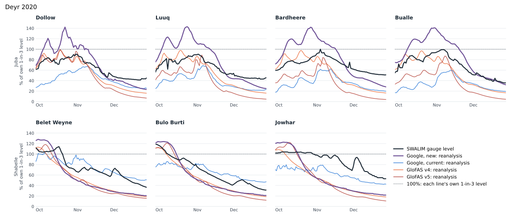
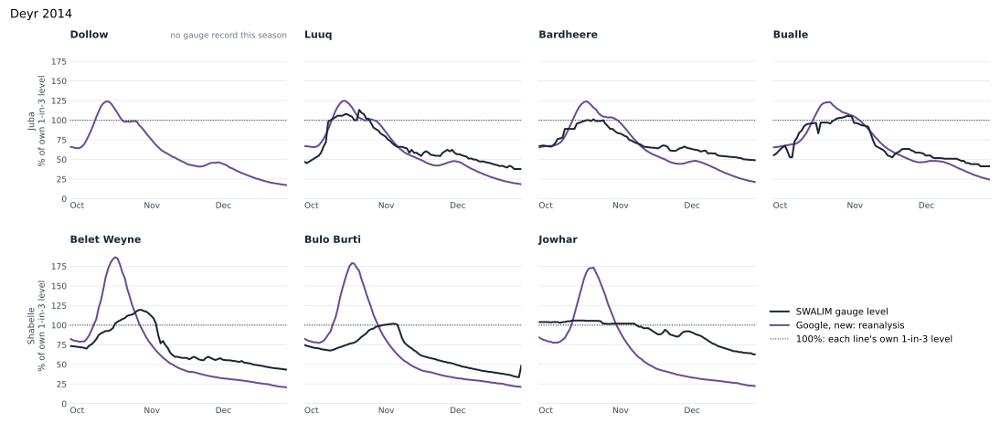

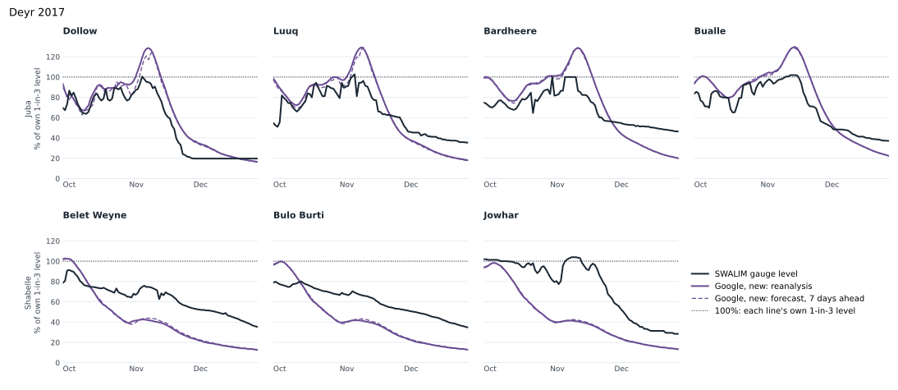
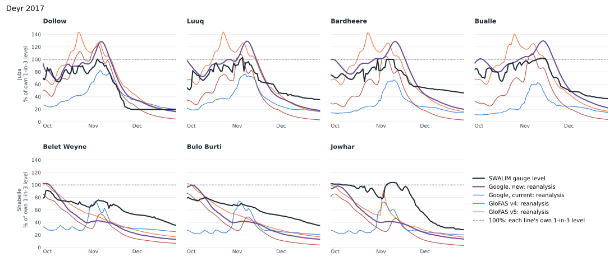
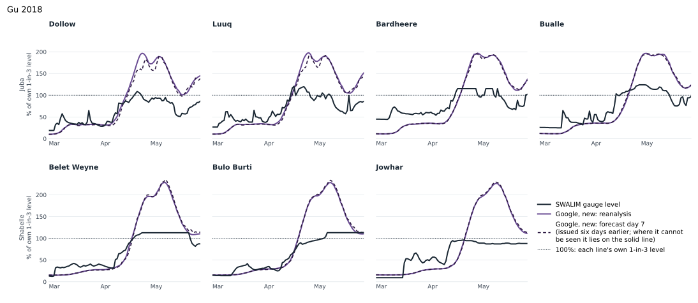
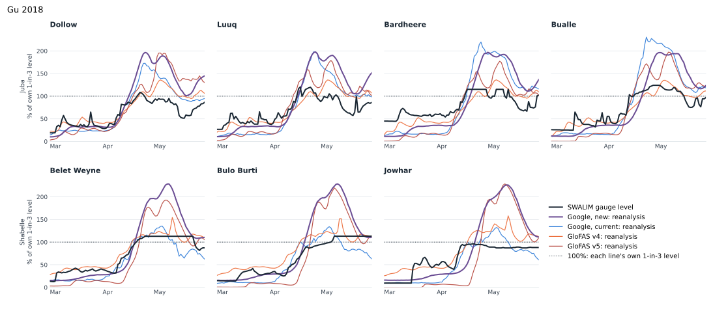
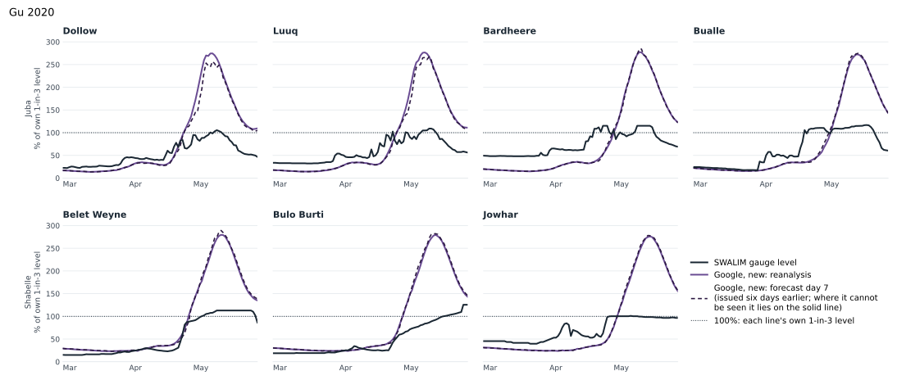


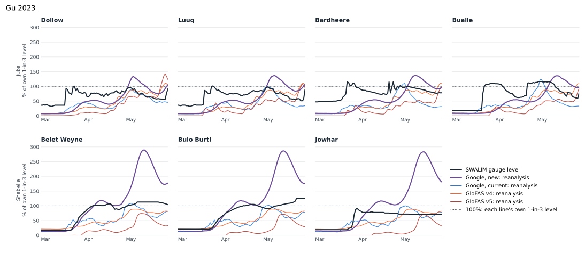


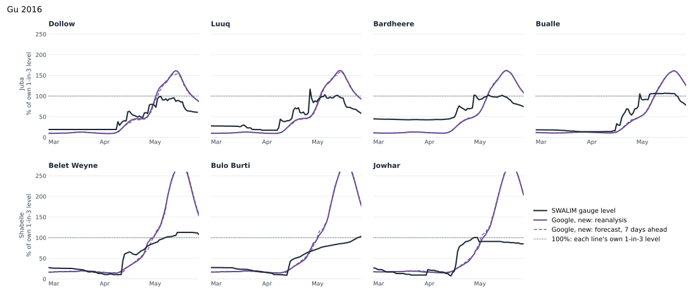
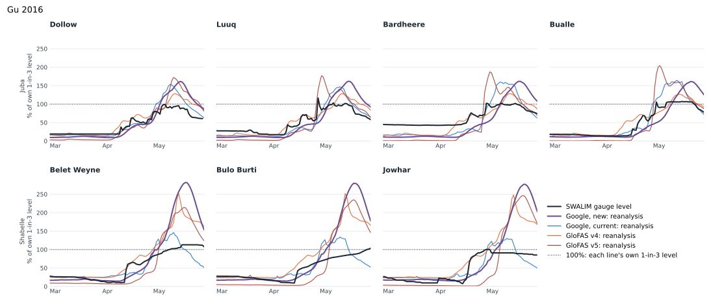
3The trigger rule by river
The trigger does not read one station. It needs three of the four Juba stations, or two of the three Shabelle stations, over their own level on the same day. The benchmark is a river flood: two gauges on the river over their own level at any time in the season. The grids show every season at the 1-in-3 level, with a reanalysis row and a forecast row for each source. For the forecast rows the rule is checked on each day's forecast for the following 7 days, and the first forecast of the season that meets it is taken.
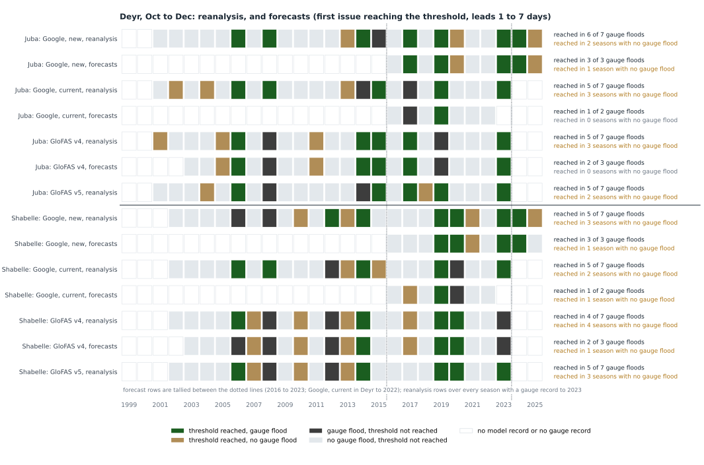
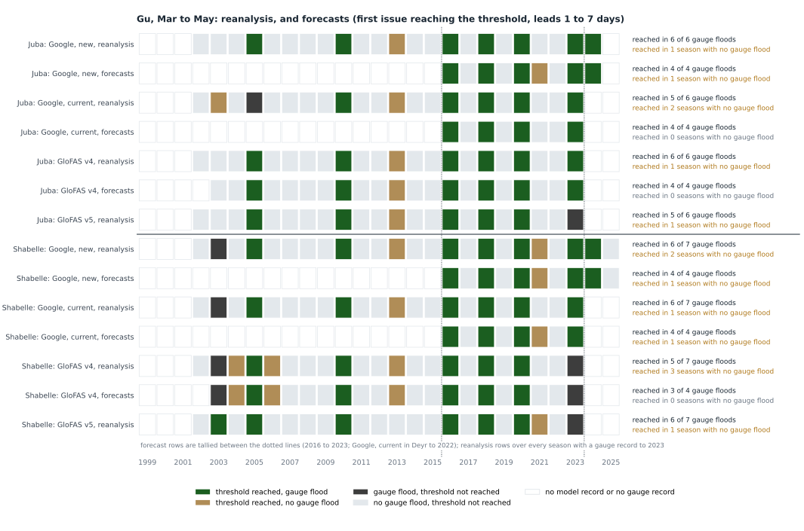
The tables give the counts, the years and the scores (each score is explained in section 6). The forecast rows cover 2016 to 2023 only, so beside each one is the reanalysis on those same seasons: the two can be compared, and neither can be compared with the 1999 to 2023 row above them. Under POD and FAR is the range each takes when the seasons are drawn again at random, which shows how much a handful of seasons can move it.
Level
Deyr, 1-in-3 level
| River | Source | Record | Seasons | River floods | Threshold reached | Reached in a flood | Reached, no floodfalse alarms | Flood not reached | POD | FAR | POFD | CSI | F1 | Frequency bias | HSS | Days before the second gaugemiddle value, floods reached |
|---|---|---|---|---|---|---|---|---|---|---|---|---|---|---|---|---|
| Juba | Google, new | reanalysis, 1999 to 2023 | 23 | 7 | 8 | 62006, 2008, 2014, 2017, 2019, 2023 | 22013, 2020 | 12015 | 0.860.62 to 1.00 | 0.250.00 to 0.50 | 0.12 | 0.67 | 0.80 | 1.14 | 0.70 | 1 before |
| Google, new | reanalysis, forecast seasons only | 8 | 3 | 4 | 32017, 2019, 2023 | 12020 | 0none | 1.001.00 to 1.00 | 0.250.00 to 0.60 | 0.20 | 0.75 | 0.86 | 1.33 | 0.75 | 1 after | |
| Google, new | forecasts, 2016 to 2023 | 8 | 3 | 4 | 32017, 2019, 2023 | 12020 | 0none | 1.001.00 to 1.00 | 0.250.00 to 0.67 | 0.20 | 0.75 | 0.86 | 1.33 | 0.75 | 5 before | |
| Google, new | forecasts, 2016 to 2025 | 10 | 4 | 6 | 42017, 2019, 2023, 2024 | 22020, 2025 | 0none | 1.001.00 to 1.00 | 0.330.00 to 0.67 | 0.33 | 0.67 | 0.80 | 1.50 | 0.62 | 6 before | |
| Google, current | reanalysis, 1999 to 2023 | 23 | 7 | 8 | 52006, 2008, 2015, 2019, 2023 | 32002, 2004, 2013 | 22014, 2017 | 0.710.40 to 1.00 | 0.380.12 to 0.67 | 0.19 | 0.50 | 0.67 | 1.14 | 0.51 | same day | |
| Google, current | reanalysis, forecast seasons only | 7 | 2 | 1 | 12019 | 0none | 12017 | 0.500.00 to 1.00 | 0.000.00 to 0.00 | 0.00 | 0.50 | 0.67 | 0.50 | 0.59 | 10 after | |
| Google, current | forecasts, 2016 to 2023 | 7 | 2 | 1 | 12019 | 0none | 12017 | 0.500.00 to 1.00 | 0.000.00 to 0.00 | 0.00 | 0.50 | 0.67 | 0.50 | 0.59 | 3 after | |
| GloFAS v4 | reanalysis, 1999 to 2023 | 23 | 7 | 8 | 52006, 2014, 2015, 2017, 2023 | 32001, 2005, 2011 | 22008, 2019 | 0.710.38 to 1.00 | 0.380.09 to 0.71 | 0.19 | 0.50 | 0.67 | 1.14 | 0.51 | 12 before | |
| GloFAS v4 | reanalysis, forecast seasons only | 8 | 3 | 2 | 22017, 2023 | 0none | 12019 | 0.670.00 to 1.00 | 0.000.00 to 0.00 | 0.00 | 0.67 | 0.80 | 0.67 | 0.71 | 15 before | |
| GloFAS v4 | forecasts, 2016 to 2023 | 8 | 3 | 2 | 22017, 2023 | 0none | 12019 | 0.670.00 to 1.00 | 0.000.00 to 0.00 | 0.00 | 0.67 | 0.80 | 0.67 | 0.71 | 16 before | |
| GloFAS v5 | reanalysis, 1999 to 2023 | 23 | 7 | 7 | 52006, 2015, 2017, 2019, 2023 | 22004, 2018 | 22008, 2014 | 0.710.40 to 1.00 | 0.290.00 to 0.60 | 0.12 | 0.56 | 0.71 | 1.00 | 0.59 | same day | |
| Shabelle | Google, new | reanalysis, 1999 to 2023 | 22 | 7 | 8 | 52012, 2014, 2019, 2020, 2023 | 32010, 2013, 2021 | 22006, 2008 | 0.710.40 to 1.00 | 0.380.10 to 0.67 | 0.20 | 0.50 | 0.67 | 1.14 | 0.50 | same day |
| Google, new | reanalysis, forecast seasons only | 8 | 3 | 4 | 32019, 2020, 2023 | 12021 | 0none | 1.001.00 to 1.00 | 0.250.00 to 0.67 | 0.20 | 0.75 | 0.86 | 1.33 | 0.75 | same day | |
| Google, new | forecasts, 2016 to 2023 | 8 | 3 | 4 | 32019, 2020, 2023 | 12021 | 0none | 1.001.00 to 1.00 | 0.250.00 to 0.67 | 0.20 | 0.75 | 0.86 | 1.33 | 0.75 | 4 before | |
| Google, new | forecasts, 2016 to 2025 | 10 | 4 | 5 | 42019, 2020, 2023, 2024 | 12021 | 0none | 1.001.00 to 1.00 | 0.200.00 to 0.50 | 0.17 | 0.80 | 0.89 | 1.25 | 0.80 | 5 before | |
| Google, current | reanalysis, 1999 to 2023 | 22 | 7 | 7 | 52006, 2008, 2014, 2019, 2023 | 22013, 2015 | 22012, 2020 | 0.710.40 to 1.00 | 0.290.00 to 0.60 | 0.13 | 0.56 | 0.71 | 1.00 | 0.58 | 9 before | |
| Google, current | reanalysis, forecast seasons only | 7 | 2 | 1 | 12019 | 0none | 12020 | 0.500.00 to 1.00 | 0.000.00 to 0.00 | 0.00 | 0.50 | 0.67 | 0.50 | 0.59 | 6 before | |
| Google, current | forecasts, 2016 to 2023 | 7 | 2 | 2 | 12019 | 12017 | 12020 | 0.500.00 to 1.00 | 0.500.00 to 1.00 | 0.20 | 0.33 | 0.50 | 1.00 | 0.30 | 12 before | |
| GloFAS v4 | reanalysis, 1999 to 2023 | 22 | 7 | 8 | 42006, 2014, 2019, 2020 | 42007, 2010, 2013, 2017 | 32008, 2012, 2023 | 0.570.25 to 0.86 | 0.500.20 to 0.80 | 0.27 | 0.36 | 0.53 | 1.14 | 0.29 | 12 before | |
| GloFAS v4 | reanalysis, forecast seasons only | 8 | 3 | 3 | 22019, 2020 | 12017 | 12023 | 0.670.00 to 1.00 | 0.330.00 to 1.00 | 0.20 | 0.50 | 0.67 | 1.00 | 0.47 | 6 before | |
| GloFAS v4 | forecasts, 2016 to 2023 | 8 | 3 | 3 | 22019, 2020 | 12017 | 12023 | 0.670.00 to 1.00 | 0.330.00 to 1.00 | 0.20 | 0.50 | 0.67 | 1.00 | 0.47 | 5 before | |
| GloFAS v5 | reanalysis, 1999 to 2023 | 22 | 7 | 8 | 52006, 2014, 2019, 2020, 2023 | 32007, 2010, 2013 | 22008, 2012 | 0.710.40 to 1.00 | 0.380.11 to 0.67 | 0.20 | 0.50 | 0.67 | 1.14 | 0.50 | 2 before |
Gu, 1-in-3 level
| River | Source | Record | Seasons | River floods | Threshold reached | Reached in a flood | Reached, no floodfalse alarms | Flood not reached | POD | FAR | POFD | CSI | F1 | Frequency bias | HSS | Days before the second gaugemiddle value, floods reached |
|---|---|---|---|---|---|---|---|---|---|---|---|---|---|---|---|---|
| Juba | Google, new | reanalysis, 1999 to 2023 | 22 | 6 | 7 | 62005, 2010, 2016, 2018, 2020, 2023 | 12013 | 0none | 1.001.00 to 1.00 | 0.140.00 to 0.40 | 0.06 | 0.86 | 0.92 | 1.17 | 0.89 | 7 after |
| Google, new | reanalysis, forecast seasons only | 8 | 4 | 4 | 42016, 2018, 2020, 2023 | 0none | 0none | 1.001.00 to 1.00 | 0.000.00 to 0.00 | 0.00 | 1.00 | 1.00 | 1.00 | 1.00 | 10 after | |
| Google, new | forecasts, 2016 to 2023 | 8 | 4 | 5 | 42016, 2018, 2020, 2023 | 12021 | 0none | 1.001.00 to 1.00 | 0.200.00 to 0.50 | 0.25 | 0.80 | 0.89 | 1.25 | 0.75 | 3 after | |
| Google, new | forecasts, 2016 to 2025 | 9 | 5 | 6 | 52016, 2018, 2020, 2023, 2024 | 12021 | 0none | 1.001.00 to 1.00 | 0.170.00 to 0.50 | 0.25 | 0.83 | 0.91 | 1.20 | 0.77 | 2 after | |
| Google, current | reanalysis, 1999 to 2023 | 22 | 6 | 7 | 52010, 2016, 2018, 2020, 2023 | 22003, 2013 | 12005 | 0.830.50 to 1.00 | 0.290.00 to 0.60 | 0.12 | 0.62 | 0.77 | 1.17 | 0.67 | 3 after | |
| Google, current | reanalysis, forecast seasons only | 8 | 4 | 4 | 42016, 2018, 2020, 2023 | 0none | 0none | 1.001.00 to 1.00 | 0.000.00 to 0.00 | 0.00 | 1.00 | 1.00 | 1.00 | 1.00 | 4 after | |
| Google, current | forecasts, 2016 to 2023 | 8 | 4 | 4 | 42016, 2018, 2020, 2023 | 0none | 0none | 1.001.00 to 1.00 | 0.000.00 to 0.00 | 0.00 | 1.00 | 1.00 | 1.00 | 1.00 | 2 before | |
| GloFAS v4 | reanalysis, 1999 to 2023 | 22 | 6 | 7 | 62005, 2010, 2016, 2018, 2020, 2023 | 12013 | 0none | 1.001.00 to 1.00 | 0.140.00 to 0.40 | 0.06 | 0.86 | 0.92 | 1.17 | 0.89 | 7 after | |
| GloFAS v4 | reanalysis, forecast seasons only | 8 | 4 | 4 | 42016, 2018, 2020, 2023 | 0none | 0none | 1.001.00 to 1.00 | 0.000.00 to 0.00 | 0.00 | 1.00 | 1.00 | 1.00 | 1.00 | 9 after | |
| GloFAS v4 | forecasts, 2016 to 2023 | 8 | 4 | 4 | 42016, 2018, 2020, 2023 | 0none | 0none | 1.001.00 to 1.00 | 0.000.00 to 0.00 | 0.00 | 1.00 | 1.00 | 1.00 | 1.00 | 7 after | |
| GloFAS v5 | reanalysis, 1999 to 2023 | 22 | 6 | 6 | 52005, 2010, 2016, 2018, 2020 | 12013 | 12023 | 0.830.50 to 1.00 | 0.170.00 to 0.50 | 0.06 | 0.71 | 0.83 | 1.00 | 0.77 | 1 after | |
| Shabelle | Google, new | reanalysis, 1999 to 2023 | 22 | 7 | 8 | 62005, 2010, 2016, 2018, 2020, 2023 | 22013, 2021 | 12003 | 0.860.57 to 1.00 | 0.250.00 to 0.50 | 0.13 | 0.67 | 0.80 | 1.14 | 0.70 | 7 before |
| Google, new | reanalysis, forecast seasons only | 8 | 4 | 5 | 42016, 2018, 2020, 2023 | 12021 | 0none | 1.001.00 to 1.00 | 0.200.00 to 0.50 | 0.25 | 0.80 | 0.89 | 1.25 | 0.75 | 7 before | |
| Google, new | forecasts, 2016 to 2023 | 8 | 4 | 5 | 42016, 2018, 2020, 2023 | 12021 | 0none | 1.001.00 to 1.00 | 0.200.00 to 0.50 | 0.25 | 0.80 | 0.89 | 1.25 | 0.75 | 13 before | |
| Google, new | forecasts, 2016 to 2025 | 10 | 5 | 6 | 52016, 2018, 2020, 2023, 2024 | 12021 | 0none | 1.001.00 to 1.00 | 0.170.00 to 0.50 | 0.20 | 0.83 | 0.91 | 1.20 | 0.80 | 12 before | |
| Google, current | reanalysis, 1999 to 2023 | 22 | 7 | 7 | 62005, 2010, 2016, 2018, 2020, 2023 | 12013 | 12003 | 0.860.60 to 1.00 | 0.140.00 to 0.40 | 0.07 | 0.75 | 0.86 | 1.00 | 0.79 | 10 before | |
| Google, current | reanalysis, forecast seasons only | 8 | 4 | 4 | 42016, 2018, 2020, 2023 | 0none | 0none | 1.001.00 to 1.00 | 0.000.00 to 0.00 | 0.00 | 1.00 | 1.00 | 1.00 | 1.00 | 10 before | |
| Google, current | forecasts, 2016 to 2023 | 8 | 4 | 5 | 42016, 2018, 2020, 2023 | 12021 | 0none | 1.001.00 to 1.00 | 0.200.00 to 0.50 | 0.25 | 0.80 | 0.89 | 1.25 | 0.75 | 16 before | |
| GloFAS v4 | reanalysis, 1999 to 2023 | 22 | 7 | 8 | 52005, 2010, 2016, 2018, 2020 | 32004, 2006, 2013 | 22003, 2023 | 0.710.38 to 1.00 | 0.380.11 to 0.70 | 0.20 | 0.50 | 0.67 | 1.14 | 0.50 | 9 before | |
| GloFAS v4 | reanalysis, forecast seasons only | 8 | 4 | 3 | 32016, 2018, 2020 | 0none | 12023 | 0.750.33 to 1.00 | 0.000.00 to 0.00 | 0.00 | 0.75 | 0.86 | 0.75 | 0.75 | 9 before | |
| GloFAS v4 | forecasts, 2016 to 2023 | 8 | 4 | 3 | 32016, 2018, 2020 | 0none | 12023 | 0.750.33 to 1.00 | 0.000.00 to 0.00 | 0.00 | 0.75 | 0.86 | 0.75 | 0.75 | 12 before | |
| GloFAS v5 | reanalysis, 1999 to 2023 | 22 | 7 | 7 | 62003, 2005, 2010, 2016, 2018, 2020 | 12021 | 12023 | 0.860.60 to 1.00 | 0.140.00 to 0.40 | 0.07 | 0.75 | 0.86 | 1.00 | 0.79 | 5 before |
Deyr, 1-in-5 level
| River | Source | Record | Seasons | River floods | Threshold reached | Reached in a flood | Reached, no floodfalse alarms | Flood not reached | POD | FAR | POFD | CSI | F1 | Frequency bias | HSS | Days before the second gaugemiddle value, floods reached |
|---|---|---|---|---|---|---|---|---|---|---|---|---|---|---|---|---|
| Juba | Google, new | reanalysis, 1999 to 2023 | 23 | 3 | 4 | 12023 | 32008, 2019, 2020 | 22006, 2014 | 0.330.00 to 1.00 | 0.750.33 to 1.00 | 0.15 | 0.17 | 0.29 | 1.33 | 0.16 | 9 after |
| Google, new | reanalysis, forecast seasons only | 8 | 1 | 3 | 12023 | 22019, 2020 | 0none | 1.001.00 to 1.00 | 0.670.00 to 1.00 | 0.29 | 0.33 | 0.50 | 3.00 | 0.38 | 9 after | |
| Google, new | forecasts, 2016 to 2023 | 8 | 1 | 3 | 12023 | 22019, 2020 | 0none | 1.001.00 to 1.00 | 0.670.00 to 1.00 | 0.29 | 0.33 | 0.50 | 3.00 | 0.38 | 3 after | |
| Google, new | forecasts, 2016 to 2025 | 10 | 1 | 3 | 12023 | 22019, 2020 | 0none | 1.001.00 to 1.00 | 0.670.00 to 1.00 | 0.22 | 0.33 | 0.50 | 3.00 | 0.41 | 3 after | |
| Google, current | reanalysis, 1999 to 2023 | 23 | 3 | 4 | 22006, 2023 | 22013, 2019 | 12014 | 0.670.00 to 1.00 | 0.500.00 to 1.00 | 0.10 | 0.40 | 0.57 | 1.33 | 0.50 | 6 after | |
| Google, current | reanalysis, forecast seasons only | 7 | 0 | 1 | 0none | 12019 | 0none | n/a | 1.001.00 to 1.00 | 0.14 | 0.00 | 0.00 | n/a | 0.00 | n/a | |
| Google, current | forecasts, 2016 to 2023 | 7 | 0 | 1 | 0none | 12019 | 0none | n/a | 1.001.00 to 1.00 | 0.14 | 0.00 | 0.00 | n/a | 0.00 | n/a | |
| GloFAS v4 | reanalysis, 1999 to 2023 | 23 | 3 | 5 | 22014, 2023 | 32005, 2015, 2017 | 12006 | 0.670.00 to 1.00 | 0.600.20 to 1.00 | 0.15 | 0.33 | 0.50 | 1.67 | 0.40 | 1 before | |
| GloFAS v4 | reanalysis, forecast seasons only | 8 | 1 | 2 | 12023 | 12017 | 0none | 1.001.00 to 1.00 | 0.500.00 to 1.00 | 0.14 | 0.50 | 0.67 | 2.00 | 0.60 | 3 before | |
| GloFAS v4 | forecasts, 2016 to 2023 | 8 | 1 | 2 | 12023 | 12017 | 0none | 1.001.00 to 1.00 | 0.500.00 to 1.00 | 0.14 | 0.50 | 0.67 | 2.00 | 0.60 | 4 before | |
| GloFAS v5 | reanalysis, 1999 to 2023 | 23 | 3 | 2 | 22006, 2023 | 0none | 12014 | 0.670.00 to 1.00 | 0.000.00 to 0.00 | 0.00 | 0.67 | 0.80 | 0.67 | 0.78 | 3 after | |
| Shabelle | Google, new | reanalysis, 1999 to 2023 | 22 | 5 | 5 | 42014, 2019, 2020, 2023 | 12010 | 12006 | 0.800.40 to 1.00 | 0.200.00 to 0.50 | 0.06 | 0.67 | 0.80 | 1.00 | 0.74 | 12 before |
| Google, new | reanalysis, forecast seasons only | 8 | 3 | 3 | 32019, 2020, 2023 | 0none | 0none | 1.001.00 to 1.00 | 0.000.00 to 0.00 | 0.00 | 1.00 | 1.00 | 1.00 | 1.00 | 10 before | |
| Google, new | forecasts, 2016 to 2023 | 8 | 3 | 3 | 32019, 2020, 2023 | 0none | 0none | 1.001.00 to 1.00 | 0.000.00 to 0.00 | 0.00 | 1.00 | 1.00 | 1.00 | 1.00 | 16 before | |
| Google, new | forecasts, 2016 to 2025 | 10 | 4 | 3 | 32019, 2020, 2023 | 0none | 12024 | 0.750.33 to 1.00 | 0.000.00 to 0.00 | 0.00 | 0.75 | 0.86 | 0.75 | 0.78 | 16 before | |
| Google, current | reanalysis, 1999 to 2023 | 22 | 5 | 5 | 42006, 2014, 2019, 2023 | 12008 | 12020 | 0.800.50 to 1.00 | 0.200.00 to 0.60 | 0.06 | 0.67 | 0.80 | 1.00 | 0.74 | 17 before | |
| Google, current | reanalysis, forecast seasons only | 7 | 2 | 1 | 12019 | 0none | 12020 | 0.500.00 to 1.00 | 0.000.00 to 0.00 | 0.00 | 0.50 | 0.67 | 0.50 | 0.59 | 13 before | |
| Google, current | forecasts, 2016 to 2023 | 7 | 2 | 1 | 12019 | 0none | 12020 | 0.500.00 to 1.00 | 0.000.00 to 0.00 | 0.00 | 0.50 | 0.67 | 0.50 | 0.59 | 20 before | |
| GloFAS v4 | reanalysis, 1999 to 2023 | 22 | 5 | 5 | 32014, 2019, 2020 | 22010, 2013 | 22006, 2023 | 0.600.20 to 1.00 | 0.400.00 to 0.80 | 0.12 | 0.43 | 0.60 | 1.00 | 0.48 | 16 before | |
| GloFAS v4 | reanalysis, forecast seasons only | 8 | 3 | 2 | 22019, 2020 | 0none | 12023 | 0.670.00 to 1.00 | 0.000.00 to 0.00 | 0.00 | 0.67 | 0.80 | 0.67 | 0.71 | 13 before | |
| GloFAS v4 | forecasts, 2016 to 2023 | 8 | 3 | 2 | 22019, 2020 | 0none | 12023 | 0.670.00 to 1.00 | 0.000.00 to 0.00 | 0.00 | 0.67 | 0.80 | 0.67 | 0.71 | 12 before | |
| GloFAS v5 | reanalysis, 1999 to 2023 | 22 | 5 | 4 | 42006, 2014, 2019, 2023 | 0none | 12020 | 0.800.43 to 1.00 | 0.000.00 to 0.00 | 0.00 | 0.80 | 0.89 | 0.80 | 0.86 | 9 before |
Gu, 1-in-5 level
| River | Source | Record | Seasons | River floods | Threshold reached | Reached in a flood | Reached, no floodfalse alarms | Flood not reached | POD | FAR | POFD | CSI | F1 | Frequency bias | HSS | Days before the second gaugemiddle value, floods reached |
|---|---|---|---|---|---|---|---|---|---|---|---|---|---|---|---|---|
| Juba | Google, new | reanalysis, 1999 to 2023 | 22 | 3 | 3 | 22018, 2020 | 12016 | 12023 | 0.670.00 to 1.00 | 0.330.00 to 1.00 | 0.05 | 0.50 | 0.67 | 1.00 | 0.61 | 1 before |
| Google, new | reanalysis, forecast seasons only | 8 | 3 | 3 | 22018, 2020 | 12016 | 12023 | 0.670.00 to 1.00 | 0.330.00 to 1.00 | 0.20 | 0.50 | 0.67 | 1.00 | 0.47 | 1 before | |
| Google, new | forecasts, 2016 to 2023 | 8 | 3 | 3 | 22018, 2020 | 12016 | 12023 | 0.670.00 to 1.00 | 0.330.00 to 1.00 | 0.20 | 0.50 | 0.67 | 1.00 | 0.47 | 7 before | |
| Google, new | forecasts, 2016 to 2025 | 9 | 3 | 4 | 22018, 2020 | 22016, 2024 | 12023 | 0.670.00 to 1.00 | 0.500.00 to 1.00 | 0.33 | 0.40 | 0.57 | 1.33 | 0.31 | 7 before | |
| Google, current | reanalysis, 1999 to 2023 | 22 | 3 | 4 | 22018, 2020 | 22013, 2016 | 12023 | 0.670.00 to 1.00 | 0.500.00 to 1.00 | 0.11 | 0.40 | 0.57 | 1.33 | 0.49 | 5 before | |
| Google, current | reanalysis, forecast seasons only | 8 | 3 | 3 | 22018, 2020 | 12016 | 12023 | 0.670.00 to 1.00 | 0.330.00 to 1.00 | 0.20 | 0.50 | 0.67 | 1.00 | 0.47 | 5 before | |
| Google, current | forecasts, 2016 to 2023 | 8 | 3 | 3 | 22018, 2020 | 12016 | 12023 | 0.670.00 to 1.00 | 0.330.00 to 1.00 | 0.20 | 0.50 | 0.67 | 1.00 | 0.47 | 11 before | |
| GloFAS v4 | reanalysis, 1999 to 2023 | 22 | 3 | 4 | 22018, 2020 | 22005, 2010 | 12023 | 0.670.00 to 1.00 | 0.500.00 to 1.00 | 0.11 | 0.40 | 0.57 | 1.33 | 0.49 | 4 after | |
| GloFAS v4 | reanalysis, forecast seasons only | 8 | 3 | 2 | 22018, 2020 | 0none | 12023 | 0.670.00 to 1.00 | 0.000.00 to 0.00 | 0.00 | 0.67 | 0.80 | 0.67 | 0.71 | 4 after | |
| GloFAS v4 | forecasts, 2016 to 2023 | 8 | 3 | 3 | 22018, 2020 | 12016 | 12023 | 0.670.00 to 1.00 | 0.330.00 to 1.00 | 0.20 | 0.50 | 0.67 | 1.00 | 0.47 | 3 after | |
| GloFAS v5 | reanalysis, 1999 to 2023 | 22 | 3 | 4 | 22018, 2020 | 22010, 2016 | 12023 | 0.670.00 to 1.00 | 0.500.00 to 1.00 | 0.11 | 0.40 | 0.57 | 1.33 | 0.49 | 5 before | |
| Shabelle | Google, new | reanalysis, 1999 to 2023 | 22 | 3 | 5 | 32016, 2020, 2023 | 22010, 2018 | 0none | 1.001.00 to 1.00 | 0.400.00 to 0.80 | 0.11 | 0.60 | 0.75 | 1.67 | 0.70 | 6 before |
| Google, new | reanalysis, forecast seasons only | 8 | 3 | 4 | 32016, 2020, 2023 | 12018 | 0none | 1.001.00 to 1.00 | 0.250.00 to 0.67 | 0.20 | 0.75 | 0.86 | 1.33 | 0.75 | 6 before | |
| Google, new | forecasts, 2016 to 2023 | 8 | 3 | 4 | 32016, 2020, 2023 | 12018 | 0none | 1.001.00 to 1.00 | 0.250.00 to 0.67 | 0.20 | 0.75 | 0.86 | 1.33 | 0.75 | 12 before | |
| Google, new | forecasts, 2016 to 2025 | 10 | 4 | 4 | 32016, 2020, 2023 | 12018 | 12024 | 0.750.33 to 1.00 | 0.250.00 to 0.67 | 0.17 | 0.60 | 0.75 | 1.00 | 0.58 | 12 before | |
| Google, current | reanalysis, 1999 to 2023 | 22 | 3 | 5 | 22016, 2020 | 32005, 2013, 2018 | 12023 | 0.670.00 to 1.00 | 0.600.25 to 1.00 | 0.16 | 0.33 | 0.50 | 1.67 | 0.40 | 14 before | |
| Google, current | reanalysis, forecast seasons only | 8 | 3 | 3 | 22016, 2020 | 12018 | 12023 | 0.670.00 to 1.00 | 0.330.00 to 1.00 | 0.20 | 0.50 | 0.67 | 1.00 | 0.47 | 14 before | |
| Google, current | forecasts, 2016 to 2023 | 8 | 3 | 4 | 32016, 2020, 2023 | 12018 | 0none | 1.001.00 to 1.00 | 0.250.00 to 0.67 | 0.20 | 0.75 | 0.86 | 1.33 | 0.75 | 22 before | |
| GloFAS v4 | reanalysis, 1999 to 2023 | 22 | 3 | 4 | 12016 | 32005, 2010, 2018 | 22020, 2023 | 0.330.00 to 1.00 | 0.750.33 to 1.00 | 0.16 | 0.17 | 0.29 | 1.33 | 0.15 | 9 before | |
| GloFAS v4 | reanalysis, forecast seasons only | 8 | 3 | 2 | 12016 | 12018 | 22020, 2023 | 0.330.00 to 1.00 | 0.500.00 to 1.00 | 0.20 | 0.25 | 0.40 | 0.67 | 0.14 | 9 before | |
| GloFAS v4 | forecasts, 2016 to 2023 | 8 | 3 | 2 | 12016 | 12018 | 22020, 2023 | 0.330.00 to 1.00 | 0.500.00 to 1.00 | 0.20 | 0.25 | 0.40 | 0.67 | 0.14 | 10 before | |
| GloFAS v5 | reanalysis, 1999 to 2023 | 22 | 3 | 5 | 22016, 2020 | 32005, 2010, 2018 | 12023 | 0.670.00 to 1.00 | 0.600.17 to 1.00 | 0.16 | 0.33 | 0.50 | 1.67 | 0.40 | 8 before |
Days before the second gauge: from the day the rule is met (reanalysis) or the day of the first forecast meeting it (forecasts) to the day the second gauge crossed its level. The rows marked 2016 to 2025 score the new model's forecasts over its whole archive; no other source has forecasts after 2023. On the Juba, 2024 and 2025 rest on the Dollow and Luuq gauges only.
With each level fitted without the season being scored
A level fitted on the same seasons it is then scored on has already seen the answers. Here the level for each season, for the model and for the gauges, is fitted on all the other seasons, and the season is then scored. Reanalysis, 1999 to 2023.
| Season | River | Source | Levels fitted on all seasons | Levels fitted without the season scored | ||||
|---|---|---|---|---|---|---|---|---|
| Floods reached | False alarms | F1 | Floods reached | False alarms | F1 | |||
| Deyr | Juba | Google, new | 6 of 7 | 2 | 0.80 | 6 of 6 | 2 | 0.86 |
| Google, current | 5 of 7 | 3 | 0.67 | 4 of 6 | 5 | 0.53 | ||
| GloFAS v4 | 5 of 7 | 3 | 0.67 | 4 of 6 | 4 | 0.57 | ||
| GloFAS v5 | 5 of 7 | 2 | 0.71 | 4 of 6 | 3 | 0.62 | ||
| Deyr | Shabelle | Google, new | 5 of 7 | 3 | 0.67 | 5 of 8 | 4 | 0.59 |
| Google, current | 5 of 7 | 2 | 0.71 | 5 of 8 | 3 | 0.62 | ||
| GloFAS v4 | 4 of 7 | 4 | 0.53 | 5 of 8 | 4 | 0.59 | ||
| GloFAS v5 | 5 of 7 | 3 | 0.67 | 5 of 8 | 3 | 0.62 | ||
| Gu | Juba | Google, new | 6 of 6 | 1 | 0.92 | 8 of 8 | 1 | 0.94 |
| Google, current | 5 of 6 | 2 | 0.77 | 7 of 8 | 2 | 0.82 | ||
| GloFAS v4 | 6 of 6 | 1 | 0.92 | 6 of 8 | 2 | 0.75 | ||
| GloFAS v5 | 5 of 6 | 1 | 0.83 | 5 of 8 | 2 | 0.67 | ||
| Gu | Shabelle | Google, new | 6 of 7 | 2 | 0.80 | 7 of 8 | 1 | 0.88 |
| Google, current | 6 of 7 | 1 | 0.86 | 7 of 8 | 1 | 0.88 | ||
| GloFAS v4 | 5 of 7 | 3 | 0.67 | 5 of 8 | 3 | 0.62 | ||
| GloFAS v5 | 6 of 7 | 1 | 0.86 | 7 of 8 | 1 | 0.88 | ||
| Season | River | Source | Levels fitted on all seasons | Levels fitted without the season scored | ||||
|---|---|---|---|---|---|---|---|---|
| Floods reached | False alarms | F1 | Floods reached | False alarms | F1 | |||
| Deyr | Juba | Google, new | 1 of 3 | 3 | 0.29 | 1 of 3 | 3 | 0.29 |
| Google, current | 2 of 3 | 2 | 0.57 | 2 of 3 | 2 | 0.57 | ||
| GloFAS v4 | 2 of 3 | 3 | 0.50 | 2 of 3 | 3 | 0.50 | ||
| GloFAS v5 | 2 of 3 | 0 | 0.80 | 2 of 3 | 0 | 0.80 | ||
| Deyr | Shabelle | Google, new | 4 of 5 | 1 | 0.80 | 4 of 5 | 1 | 0.80 |
| Google, current | 4 of 5 | 1 | 0.80 | 4 of 5 | 1 | 0.80 | ||
| GloFAS v4 | 3 of 5 | 2 | 0.60 | 3 of 5 | 2 | 0.60 | ||
| GloFAS v5 | 4 of 5 | 0 | 0.89 | 4 of 5 | 1 | 0.80 | ||
| Gu | Juba | Google, new | 2 of 3 | 1 | 0.67 | 2 of 3 | 2 | 0.57 |
| Google, current | 2 of 3 | 2 | 0.57 | 2 of 3 | 3 | 0.50 | ||
| GloFAS v4 | 2 of 3 | 2 | 0.57 | 2 of 3 | 2 | 0.57 | ||
| GloFAS v5 | 2 of 3 | 2 | 0.57 | 2 of 3 | 2 | 0.57 | ||
| Gu | Shabelle | Google, new | 3 of 3 | 2 | 0.75 | 4 of 4 | 1 | 0.89 |
| Google, current | 2 of 3 | 3 | 0.50 | 3 of 4 | 2 | 0.67 | ||
| GloFAS v4 | 1 of 3 | 3 | 0.29 | 2 of 4 | 2 | 0.50 | ||
| GloFAS v5 | 2 of 3 | 3 | 0.50 | 3 of 4 | 2 | 0.67 | ||
4The forecasts, by days ahead
Each forecast archive is read one step at a time: the forecast for a day made 1 day ahead (the day it is issued), 2 days ahead, and so on. The new model goes to 10 days, the others to 7. Seasons 2016 to 2023. GloFAS v4 runs several versions of each forecast; the middle one is used.
Measure
Take the days on which the river rose most over the days before (the top tenth of rises in the model's own reanalysis). The measure is how much of that rise the forecast made that many days earlier already showed. 1 means all of it; 0 means the forecast still showed the river where it was; above 1 means it showed more than came.
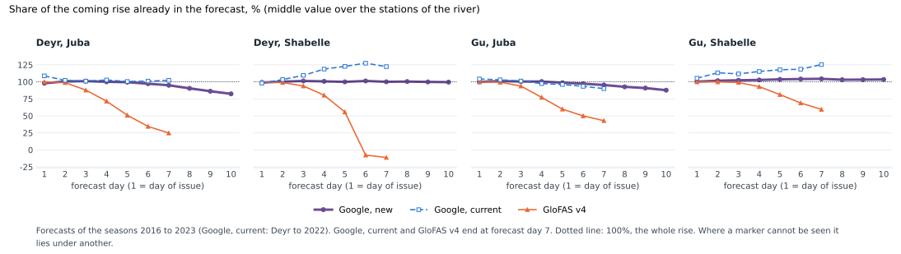
The forecast's highest value of the season divided by the reanalysis's highest value on the same days. At 1 the forecast carries the same peak as the reanalysis, so a level fitted on the reanalysis is reached as easily on the forecast; below 1, less easily; above 1, more easily.
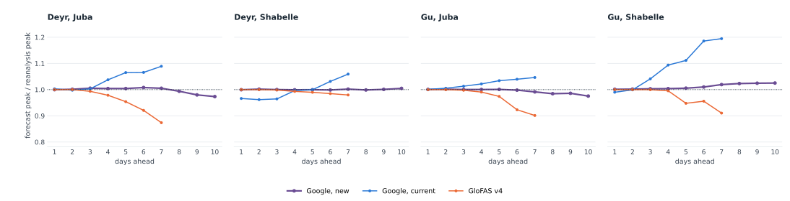
Rank correlation of the forecast with the gauge on the day forecast (section 7 explains the measure), averaged over the stations of the river.
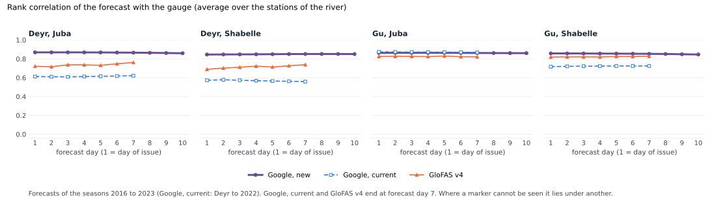
POD at single stations at the 1-in-3 level, with the counts of the stations of a river added up.

FAR at single stations at the 1-in-3 level, with the counts of the stations of a river added up.

At 7 days ahead the new model's daily forecast and its reanalysis have a rank correlation of 0.995 to 0.999 across the seven stations and two seasons. Google's description of its forecasting model (Cohen and others, 2026, preprint) says the days ahead are run with archived weather forecasts from ECMWF and GraphCast. We have not confirmed that this holds for the November 2026 release.
5Timing at each station
Two measures in days, over the flood seasons at each gauge: when the model peaks against when the gauge peaks, and when the model first reaches its 1-in-3 level against when the gauge first reaches its own. Plus means the model is ahead of the gauge. Where a gauge holds one value at its top for several days, its peak is dated to the first of those days, so peak dates at those gauges are loose.

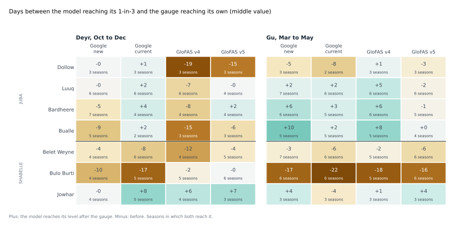
6Flood seasons at each station
Each season at a station falls into one of four boxes: a flood at the gauge with the model's threshold reached; a flood with the threshold not reached; the threshold reached with no flood, which is a false alarm; or neither. Every score below is a different way of reading those four counts. The counts are small: a station has 8 to 25 seasons with a gauge record (Dollow 9 at most), of which 3 to 11 are flood seasons at the 1-in-3 level, so a single season moves POD by 0.09 to 0.33.
Score
Flood level
POD, probability of detection: of the flood seasons at the gauge, the share in which the model reached its own threshold. 1 means the threshold was reached in every flood season; 0 means in none.
FAR, false alarm ratio: of the seasons in which the model reached its threshold, the share with no flood at the gauge. 0 means no false alarm.
POFD, probability of false detection: of the seasons with no flood at the gauge, the share in which the model still reached its threshold. 0 means the threshold was never reached without a flood.
CSI, critical success index: the floods reached, divided by the floods reached plus the floods not reached plus the false alarms. It falls with either kind of error; 1 means neither occurred.
F1: twice the floods reached, divided by twice the floods reached plus the floods not reached plus the false alarms. It is high only when POD is high and FAR is low; 1 means every flood was reached with no false alarm.
Frequency bias: seasons in which the model reached its threshold divided by flood seasons at the gauge. Above 1 the model reaches its threshold more often than the gauge floods; below 1, less often.
Accuracy: the share of all seasons in which model and gauge agree, flood or no flood.
HSS, Heidke skill score: accuracy with the agreement that chance alone would give taken out. 0 means no more agreement than chance; 1 means model and gauge agree in every season.
PSS, Peirce skill score: POD minus POFD. 0 means the model does not separate flood seasons from the rest; 1 means it separates them fully.
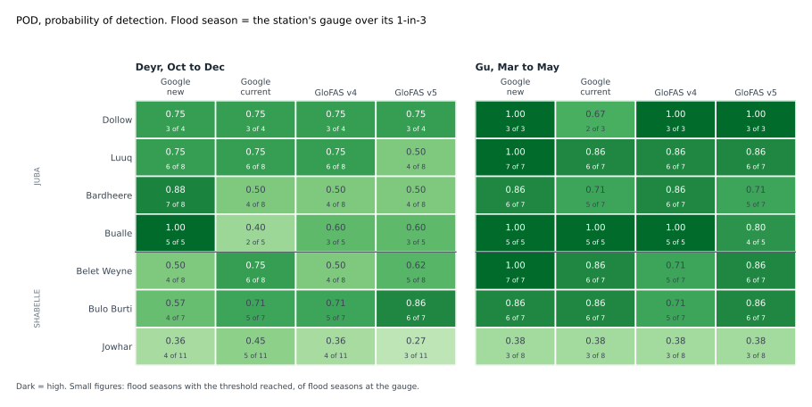

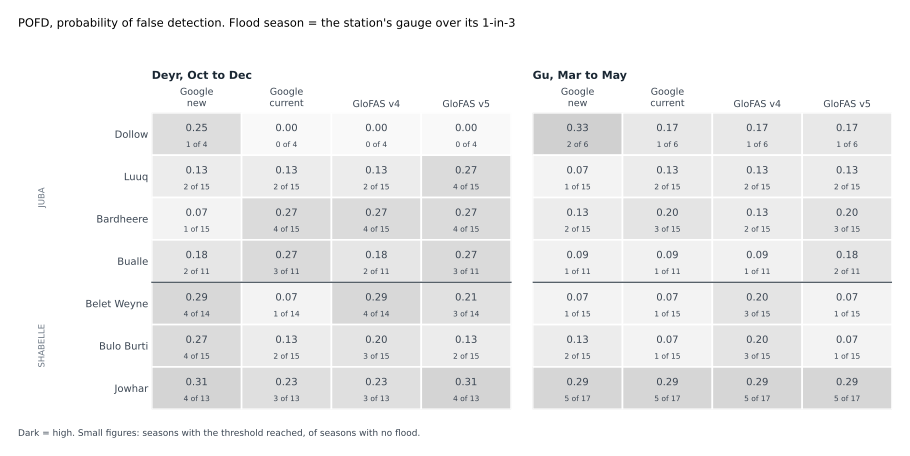


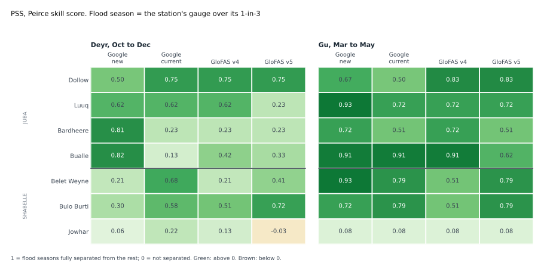
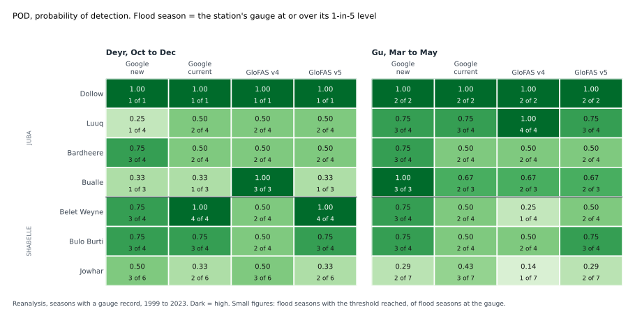
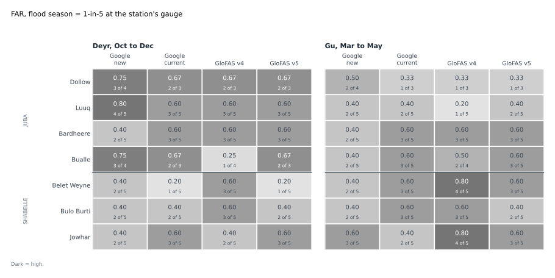


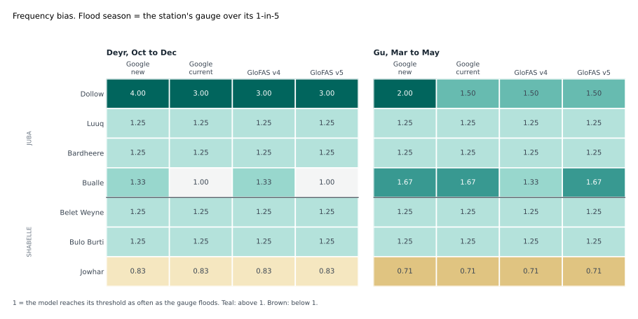

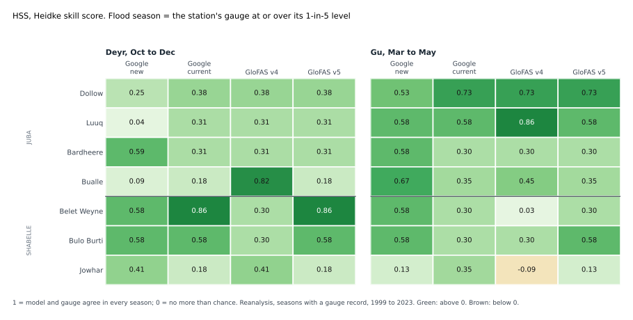
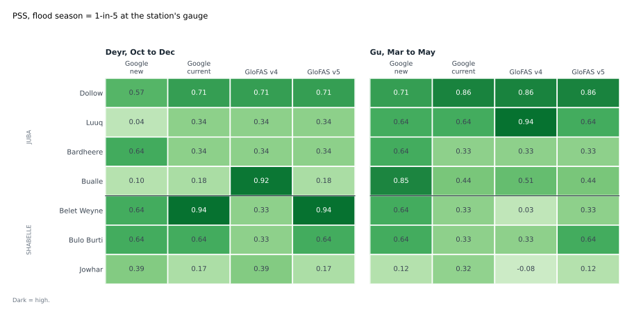
7Day-to-day agreement with the gauges
Rank correlation puts the days in order by model flow and, separately, by gauge level, and measures how far the two orders agree: 1 means the model's highest days are the gauge's highest days, 0 means no relation. It uses the order of the days, not their values, so the scale of a model does not matter.
View
Model and gauge compared on the same day. The small figures are the range the value takes when the seasons are drawn again at random, which shows how much it depends on which seasons happen to be on record.
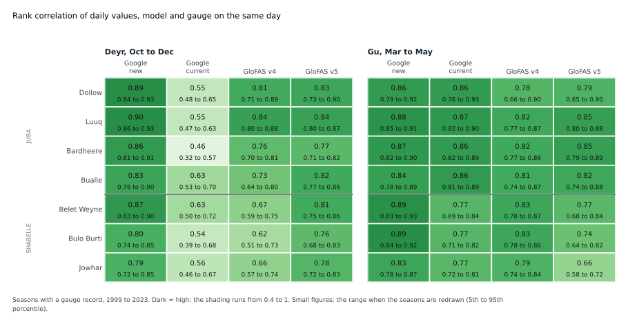
Every river rises and falls at about the same time each season, which alone gives any model a high value. Here the usual level for each calendar day is taken out of both series first, so what is left is whether the model is high in the weeks when the gauge is higher than usual.

The model's curve is slid along the calendar, from 10 days behind the gauge to 30 days ahead of it, and the highest value is kept. The small figure is that position in days: plus means the model's curve runs ahead of the gauge's, minus means it runs behind.
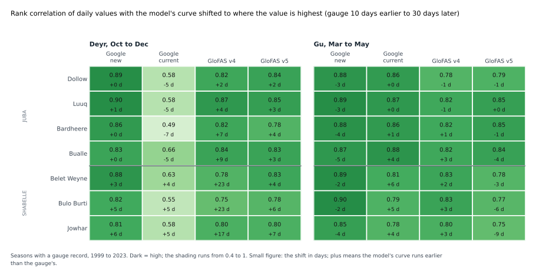
Slid as before, using only seasons in which the gauge or the model went over its own 1-in-3 level. The small figure is the number of seasons used.

8How each model orders the seasons
Two measures of whether a model's large seasons are the gauge's large seasons. The rank correlation of season peaks compares the order of the seasons by their highest model flow with their order by highest gauge level. AUC is the chance that a flood season at the gauge carries a higher model peak than a season without a flood: 0.5 is a coin toss, 1 means every flood season has a higher model peak than every season without a flood. Neither depends on where the model's threshold is set.

Flood level at the gauge
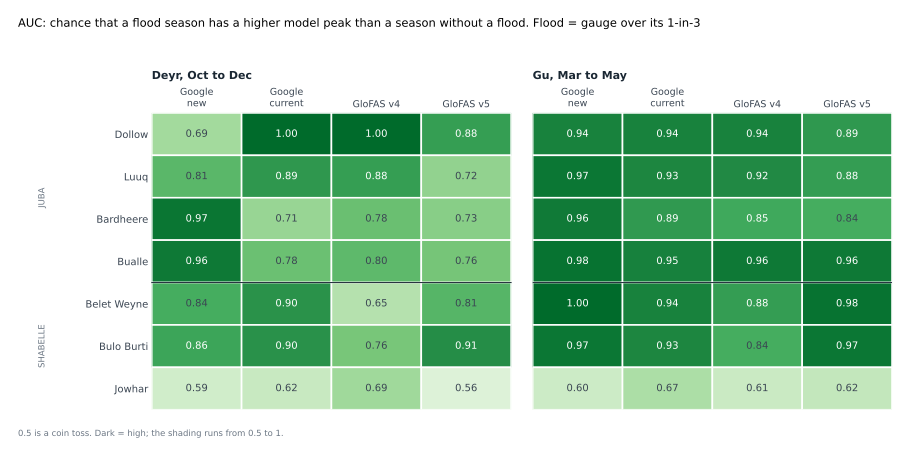
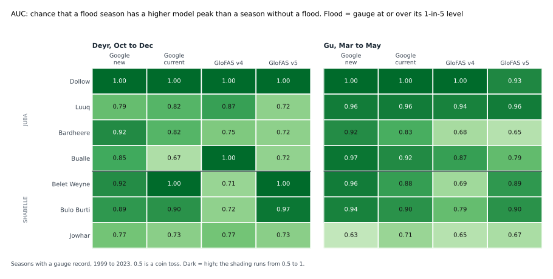
9Size of the flows against SWALIM's discharge series
SWALIM publishes a discharge series, in cubic metres per second, at four of the seven stations. It is worked out from the gauge level: the two move in exactly the same order from day to day. It is the only figure for flow we have at these stations. The series repeats its highest value at Luuq on 25 days and at Bardheere on 15 days, which is what a ceiling in the record looks like, so the largest floods may be higher than the series shows. At Bardheere, SWALIM's typical flow is 6.9 times its typical flow at Luuq, the next station upstream, while every model has about the same flow at the two (0.8 to 1.0 times). The Bardheere series is therefore not used here as a measure of size.
Measure
Ratio of medians: the model's flow on a typical day divided by SWALIM's on a typical day. 1 means equal; 2 means the model runs at twice SWALIM's flow. Typical days are low-flow days, so this says little about floods.
Ratio of season peaks: the model's highest flow of each season divided by SWALIM's, middle value over the seasons. Where SWALIM's series stops at a top value, a ratio above 1 can come from that ceiling.
Correlation of daily values, from 0 (no relation) to 1 (the two rise and fall together in proportion).
Variability ratio: the size of the model's swings divided by the size of SWALIM's. 1 means the same spread.
KGE, Kling-Gupta efficiency: one score built from the correlation, the variability ratio and the ratio of averages. 1 means the model matches SWALIM's series in all three; the lower the score, the further the model is from it.
NSE, Nash-Sutcliffe efficiency: 1 means the model matches SWALIM's series; 0 means it is no closer to it than a flat line at SWALIM's average; below 0, further away than that line.

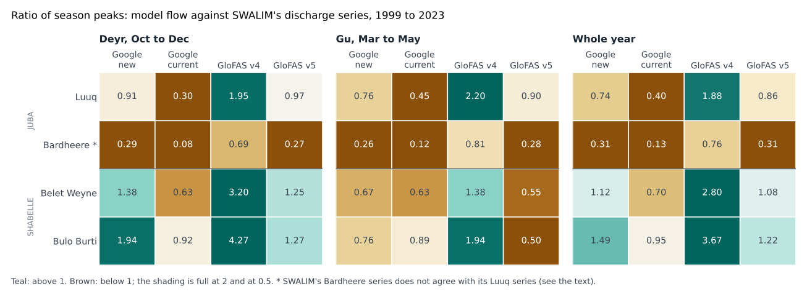
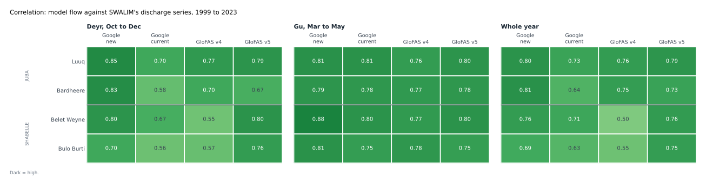
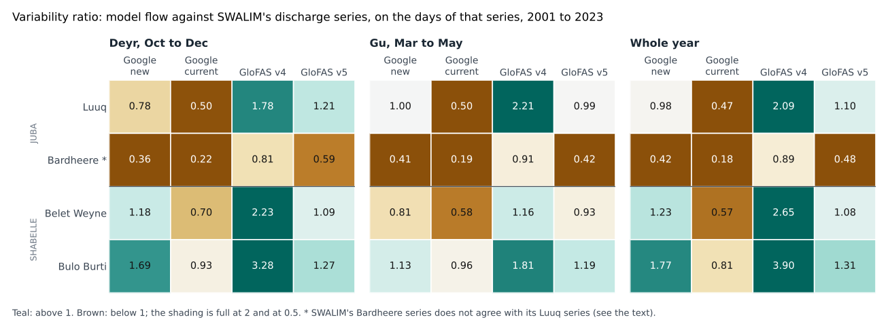

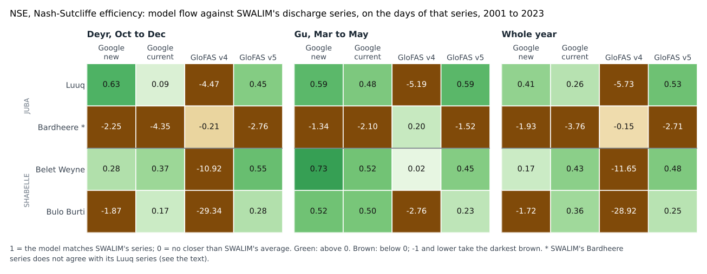
The trigger reads each model against the model's own levels, so a model that runs high or low by a steady factor loses nothing in sections 3 to 8. This section is the only one about absolute size.
10The gauges used as the benchmark
A level meant to be reached in one season in three should be reached in about a third of the seasons on record. Where it is reached more often, several seasons share the same top reading. Some gauges also sit at one reading for days at the height of a flood: Jowhar in Deyr (9 of 24 seasons); Belet Weyne in Gu (4 of 22 seasons); Bardheere in Deyr (3 of 23 seasons). At those gauges the size and the date of a peak are not known beyond that reading, and scores against them are looser than the figures suggest.
| River | Gauge | Deyr | Gu | ||||||
|---|---|---|---|---|---|---|---|---|---|
| Seasons on record | At or over the 1-in-3 level | Seasons at their top reading for 5 days or more | Most common season peak | Seasons on record | At or over the 1-in-3 level | Seasons at their top reading for 5 days or more | Most common season peak | ||
| Juba | Dollow | 8 | 4 | 1 | 5.08 min 2 seasons | 9 | 3 | 0 | 2.82 min 1 seasons |
| Luuq | 23 | 8 | 1 | 6.00 min 2 seasons | 22 | 7 | 0 | 5.30 min 2 seasons | |
| Bardheere | 23 | 8 | 3 | 9.00 min 4 seasons | 22 | 7 | 2 | 9.00 min 3 seasons | |
| Bualle | 16 | 5 | 1 | 6.10 min 2 seasons | 16 | 5 | 0 | 4.00 min 2 seasons | |
| Shabelle | Belet Weyne | 22 | 8 | 2 | 6.70 min 2 seasons | 22 | 7 | 4 | 8.30 min 5 seasons |
| Bulo Burti | 22 | 7 | 0 | 4.85 min 2 seasons | 22 | 7 | 2 | 8.00 min 2 seasons | |
| Jowhar | 24 | 11 | 9 | 5.10 min 3 seasons | 25 | 8 | 1 | 5.30 min 4 seasons | |
11What this review does not establish
- On 5 November 2026 Google's Flood Hub, its public forecast service, was not yet serving the new model. Everything here is from Google's published reanalysis and forecast archive.
- The new model's forecast archive is close to a copy of its reanalysis, and it shows almost the whole of a coming rise a week ahead (section 4). Whether a live forecast will stay this close when the rain forecast is off is not known from the archive.
- The forecast comparison rests on eight seasons, 2016 to 2023, with two to four river floods per river and season.
- The benchmark for a river is two gauges over their level at any time in the season, while the trigger needs three of four Juba stations, or two of three Shabelle stations, on the same day. The two are not the same test, and the benchmark depends on which gauges were reporting.
- The Bardheere gauge has no readings after November 2023 and the Bualle gauge none after March 2024, so the lower Juba cannot be checked from then on.
- Each model's flow is read at one place on its river network per station: the cell or reach on the main river nearest the station.
- Stations on one river rise together, so the seven stations are not seven separate tests, and totals added over stations count the same floods more than once.
12Method and files
Levels are read from each record's own season peaks (Weibull plotting position), gauges 2000 to 2023, models 1999 to 2023; a value equal to its level counts as reaching it. A gauge season counts with at least 30 readings; a reading of zero is treated as a gap. Station floods compare the season's highest values; the river rule counts the stations over their level on the same day, in the season months only. Ranges come from drawing the seasons again with replacement (400 times for correlations, 1,000 for counts) and are the 5th to 95th percentile. Days ahead: 1 is the day the forecast is issued. Google, current's archive stamps its forecast days one day later than its reanalysis days and is lined up on its reanalysis in section 4; in the river rule its days 1 to 7 are the seven days after the issue day, as the live trigger reads them. Sources: Google Runoff Reanalysis and Reforecast, November 2026 release; SWALIM gauge levels and discharge series; GloFAS v4 and v5 from the Copernicus Emergency Management Service.
Every score, by season, river and station: river rulestation floods, 1-in-3station floods, 1-in-5 daily agreement and timingforecasts by days aheaddischarge gaugesall, as JSON